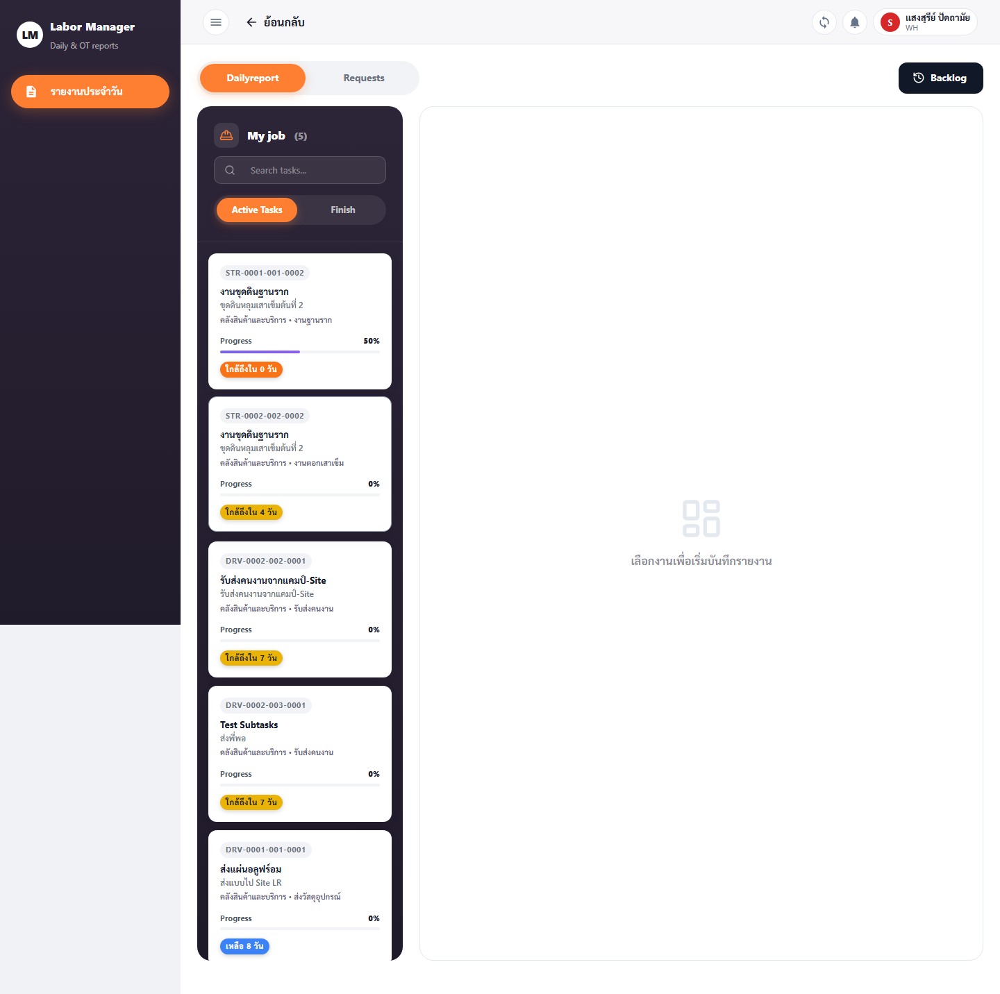
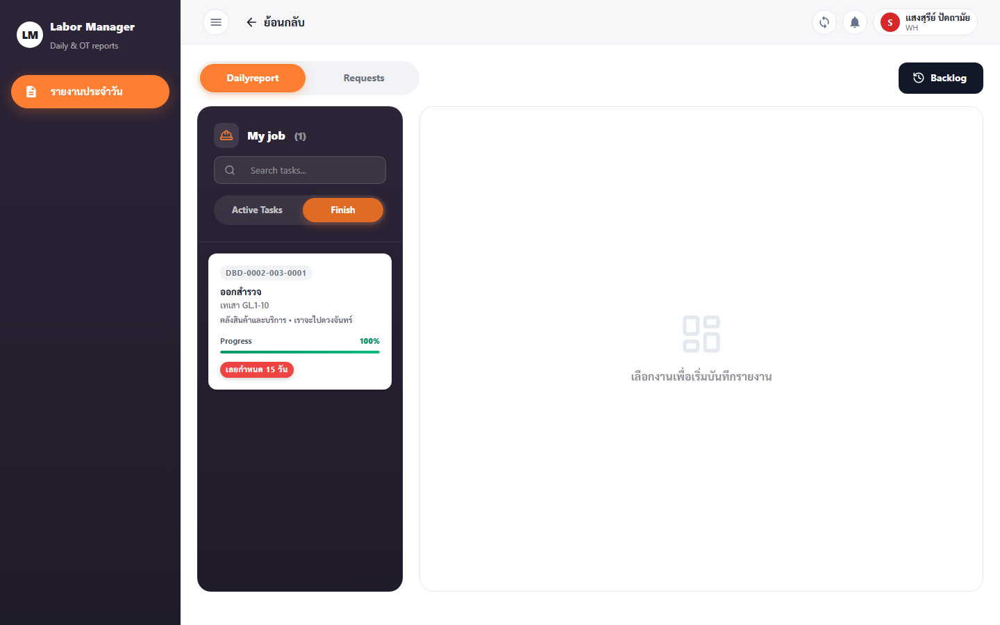
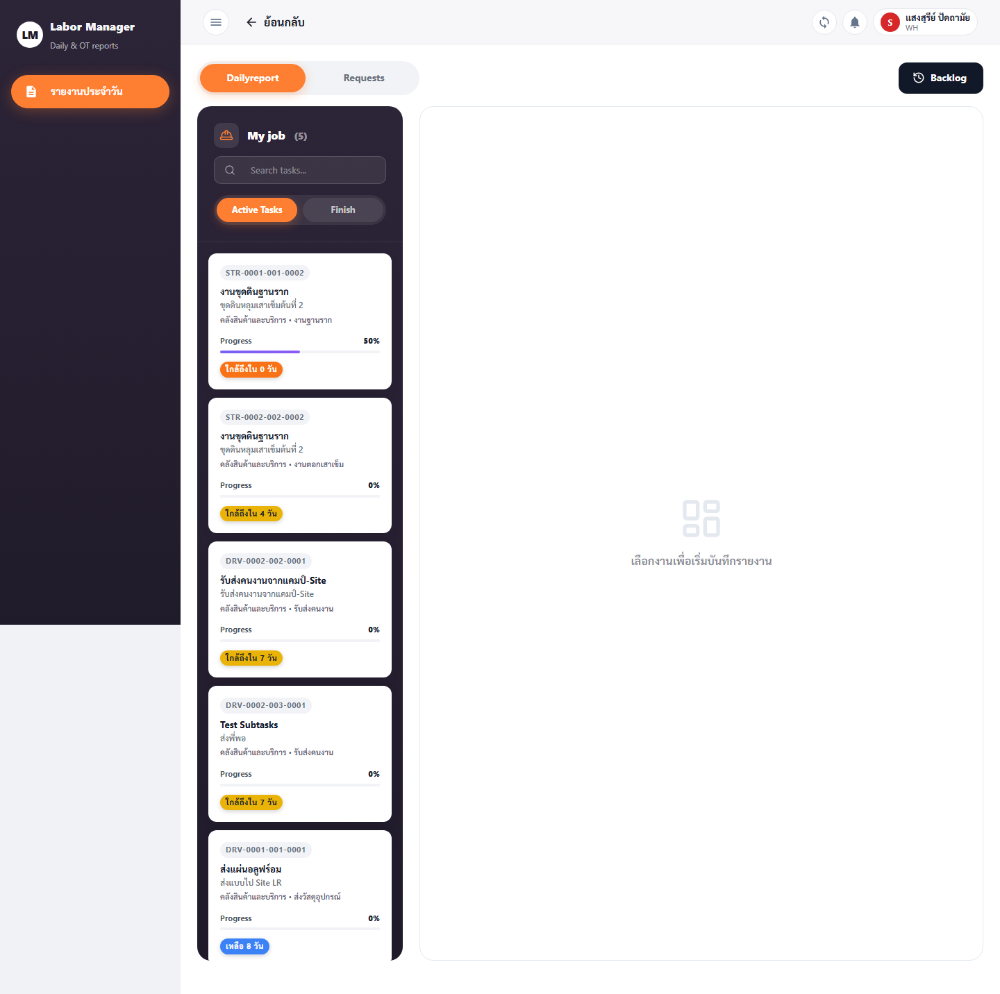

SE และ FM ทำอะไรได้บ้าง
SE (วิศวกรประจำหน้างาน) และ FM (หัวหน้างาน) ทำงานหน้างานเป็นหลัก สองบทบาทนี้ใช้เมนูชุดเดียวกัน ได้แก่ Daily Reports (รายงานประจำวัน), Overtime (ทำงานล่วงเวลา) และ DC Management (แรงงานรายวัน)
ความต่างเล็กน้อยที่ต้องรู้:
- Daily Reports: SE สร้าง/แก้ รายงานได้ · FM เปิดดูได้อย่างเดียว (สร้าง/แก้/ลบไม่ได้)
- Overtime: เมนูนี้สำหรับ SE (FM ไม่มีสิทธิ์เข้าหน้า Overtime)
ทางลัด: Daily Reports · Overtime · DC Management
1 · Daily Reports (รายงานประจำวัน)
หน้า /daily-reports — บันทึกความคืบหน้าของงานหน้างานในแต่ละวัน พร้อมจำนวนแรงงาน ชั่วโมงงาน และรูปภาพ
1.1 เปิดหน้าและสลับแท็บสถานะ
- คลิกเมนู "รายงานประจำวัน"
- สลับแท็บ "รอดำเนินการ (pending)" และ "เสร็จสิ้น (finish)" เพื่อดูรายงานตามสถานะ
- ใช้ช่อง "ค้นหา/เลือกรายชื่อแรงงาน (Worker Filter)" เพื่อกรอง


1.2 สร้างรายงานประจำวัน (SE)
- กดปุ่ม "สร้างรายงาน"
- เลือก "เลือกการ์ดงาน (Task) *" ที่ต้องการรายงาน และ "สถานที่ / โครงการ"
- เลือก "แรงงานรายวัน *" ที่มาทำงาน — ระบุสถานะ ปกติ / ลา / ขาดงาน / Support
- กรอก "งานที่ทำ / รายละเอียดงาน *", "ชั่วโมงที่ทำได้" และชั่วโมง OT เช้า / OT เที่ยง / OT เย็น (ถ้ามี)
- ระบุ "วันที่ทำงาน" · ใส่ "หมายเหตุ (ถ้ามี)"
- กด "บันทึก"

มี "โหมดวางแผนล่วงหน้า" และปุ่ม "ดึงแผนงาน" ช่วยดึงแผนแรงงานเข้ามาในรายงานอัตโนมัติ ลดการกรอกซ้ำ
1.3 แนบรูปภาพประกอบรายงาน
- ในฟอร์มรายงาน เลื่อนไปที่ "อัปโหลดรูปภาพ (ถ้ามี)"
- กดเพื่อเลือกรูปจากเครื่อง/ถ่ายภาพหน้างาน → แนบได้หลายรูป
- กด "บันทึก" เพื่อแนบรูปเข้ากับรายงาน

FM: เปิดหน้านี้เพื่อดูรายงานและรูปภาพได้ทั้งหมด แต่ปุ่มสร้าง/แก้/ลบจะไม่แสดง
2 · Overtime (ทำงานล่วงเวลา) — SE
หน้า /overtime — บันทึกและขออนุมัติการทำงานล่วงเวลาของแรงงานรายวัน
2.1 ดูรายการ OT
- คลิกเมนู "ทำงานล่วงเวลา" — ระบบแสดงรายการคำขอ OT ทั้งหมด

2.2 สร้างคำขอ OT
- กดปุ่ม "สร้าง OT"
- เลือก "โครงการ/สังกัด *" และ "แรงงานรายวัน *"
- กรอก "งาน/รายละเอียดงาน *" (เช่น "ระบุรายละเอียดงาน OT ที่ทำ")
- เลือก "วันที่ *", "เวลาเริ่ม OT *" และ "เวลาจบ OT *"
- ระบุ "ชั่วโมง OT" — ระบบคำนวณ "ค่าแรง OT รวม (1.5x)" ให้อัตโนมัติ
- แนบรูปได้ที่ "อัปโหลดรูปภาพ (ถ้ามี)" · ใส่ "หมายเหตุ (ถ้ามี)"
- กด "บันทึก" · กด "ยกเลิก" เพื่อปิดโดยไม่บันทึก

2.3 ดูประวัติ OT
- ที่รายการ OT กด "ดูประวัติ" เพื่อเปิดหน้าประวัติการแก้ไข (
/overtime/[id]/history)
ผู้ที่เข้า Overtime ได้ด้วย: OE, PE, PM, PD และ AM
3 · DC Management (แรงงานรายวัน)
SE และ FM เข้าถึง DC Management ได้ · วิธีใช้แบบทีละขั้นตอนอยู่ที่
→ หน้า AM › DC Management